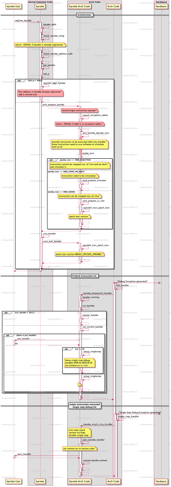

Kprobe in linux with aarch64
Table of Contents
Overview
kprobe是Linux内核自带的调试机制，可以在内核的函数执行前后添加钩子来执行自定义函数来达到修改，调试内核的目的。
具体简介可以参考内核官方文档，这个文档已经有比较详细的记录.
https://www.kernel.org/doc/html/latest/trace/kprobes.html
basic usage
先来看一下这个功能的基础使用方法, 官方的两个例子很简单
Kernel config
CONFIG_KPROBES=yCONFIG_SAMPLES=yCONFIG_SAMPLE_KPROBES=yCONFIG_CONFIG_SAMPLE_KRETPROBES=y
kprobe
insmod kprobe_example.ko symbol=cmdline_proc_open
root@j5dvb:/system/lib/modules/4.14.74# cat /proc/cmdline[ 277.486723] <cmdline_proc_open> pre_handler: p->addr = 0xffffff8008205f10, pc = 0xffffff8008205f10, pstate = 0x60400149[ 277.488094] <cmdline_proc_open> post_handler: p->addr = 0xffffff8008205f10, pstate = 0x60400149console=uart8250,mmio32,0x43B90000,921600n8 root=/dev/ram0 rdinit=/init rw rootwait loglevel=14 hobotboot.hardware=j5dvb hobotboot.reason=freboot hobotboot.fchm_fault=0x00000001 hobotboot.fault_timestamp=1637559008 hobotboot.ipaddr=10.106.32.44 hobotboot.slot_suffix=_a hobotboot.bpu_slot_suffix=_-1 hobotboot.mode=normal module_blacklist=isp_hw1 dyndbg="module module +p;"root@j5dvb:/system/lib/modules/4.14.74#
上述命令可以在打开/proc/cmdline这个命令时运行自己注册的钩子函数
kretprobe
insmod kretprobe_example.ko func=meminfo_proc_show
root@j5dvb:/system/lib/modules/4.14.74# cat /proc/meminfo[ 561.094342] meminfo_proc_show returned 0 and took 27667 ns to executeMemTotal: 3771188 kBMemFree: 2865632 kBMemAvailable: 3013684 kBBuffers: 1688 kBCached: 156948 kBSwapCached: 0 kBActive: 327792 kB
kprobe VS kretprobe
kretprobe底层通过kprobe来实现，与kprobe的不同在于实现了一系列辅助的函数来支持instance的实例化，这样在每次运行到对应的函数/地址时会自动生成一个新的private data，从而实现并发和多实例.
从官方的例子就可以看到，kretprobe可以实现统计函数运行时间的功能，但是简单的kprobe就不行（因为没有private data）。
typedef int (*kprobe_pre_handler_t) (struct kprobe *, struct pt_regs *);typedef void (*kprobe_post_handler_t) (struct kprobe *, struct pt_regs *,unsigned long flags);typedef int (*kretprobe_handler_t) (struct kretprobe_instance *,struct pt_regs *);
kprobe的回调中，kprobe是全局共享的，所以没有简单的办法去追踪每次的函数调用。而kretprobe的回调会有instance的概念，并且可以可以携带private在kretprobe_instance中.
简而言之，kretprobe会处理好多实例的问题，并且对每次的函数进入，退出都有对应的private data可供保存对应的数据。而kprobe只能探测单条指令，在指令运行前后执行注册进取的callback.
底层实现
kprobe
kprobe_addr 用来获取需要patch的指令地址，目前可以通过指定add/symbol + offset的方法来指定.
check_kprobe_rereg 用来检查kprobe对象是否已经被注册过，如果已经被注册过，就返回-EINVAL的错误
prepare_kprobe 用来记录原始的指令, 计算新的指令，并且注册到系统的insn的处理中
arm_kprobe 用来给text代码段打patch，将需要trap的指令替换成debug指令
kprobe 相关关键代码
在注册kprobe时，系统将对应地址的指令替换成brk的指令，当系统运行到对应的地址时，系统会触发debug的异常
/* arm kprobe: install breakpoint in text */void __kprobes arch_arm_kprobe(struct kprobe *p){void *addr = p->addr;u32 insn = BRK64_OPCODE_KPROBES;aarch64_insn_patch_text(&addr, &insn, 1);}/* disarm kprobe: remove breakpoint from text */void __kprobes arch_disarm_kprobe(struct kprobe *p){void *addr = p->addr;aarch64_insn_patch_text(&addr, &p->opcode, 1);}
static int brk_handler(unsigned long unused, unsigned int esr,struct pt_regs *regs){if (call_break_hook(regs, esr) == DBG_HOOK_HANDLED)return 0;if (user_mode(regs)) {send_user_sigtrap(TRAP_BRKPT);} else {pr_warn("Unexpected kernel BRK exception at EL1\n");return -EFAULT;}return 0;}NOKPROBE_SYMBOL(brk_handler);
在brk handler中，kprobe通过设置单部调试来实现调试指令的运行, 代码如下所示
static void __kprobes kprobe_handler(struct pt_regs *regs){struct kprobe *p, *cur_kprobe;struct kprobe_ctlblk *kcb;unsigned long addr = instruction_pointer(regs);kcb = get_kprobe_ctlblk();cur_kprobe = kprobe_running();p = get_kprobe((kprobe_opcode_t *) addr);if (p) {if (cur_kprobe) {if (reenter_kprobe(p, regs, kcb))return;} else {/* Probe hit */set_current_kprobe(p);kcb->kprobe_status = KPROBE_HIT_ACTIVE;/** If we have no pre-handler or it returned 0, we* continue with normal processing. If we have a* pre-handler and it returned non-zero, it will* modify the execution path and no need to single* stepping. Let's just reset current kprobe and exit.*/if (!p->pre_handler || !p->pre_handler(p, regs)) {setup_singlestep(p, regs, kcb, 0);} elsereset_current_kprobe();}}/** The breakpoint instruction was removed right* after we hit it. Another cpu has removed* either a probepoint or a debugger breakpoint* at this address. In either case, no further* handling of this interrupt is appropriate.* Return back to original instruction, and continue.*/}
在被hook的指令单步执行之后，系统通过 kprobe_breakpoint_ss_handler 来处理接下来的任务, 并在此处清理单步调试的设置，并调用post_handler
kprobe执行流程
流程图大致如下:

上图大概画出了aarch64架构下kprobe的执行流程，从图中可以看到，kprobe利用修改指令，并且CPU单步调试的功能完成整个kprobe的功能。
注：为了方便，图中并没有画出需要模拟指令的运行路径，对于需要模拟运行的指令，如b，bl等并不会使用单步调试的功能，而是通过软件来模拟，见代码singlestep for insn simulation, 并且在模拟完成之后直接调用 post_handler回调。
kretprobe
注册
kretprobe在kprobe的基础上实现，注册函数很简单，参数检查，分配对象，以及注册kprobe
kernel source for register_kretprobe
- 检查参数
kretprobe要求探测的函数位于行数开端，在注册时系统会检查地址是否在函数的开始位置 kprobe_on_func_entry - 根据maxactive来分配kretprobe_instance对象
- 注册kprobe
pre_handler
kernel source for pre_handler_kretprobe
- 从freelist中取出一个未使用的kretprobe_instance对象
- 如果注册有entry_handler，则运行entry_handler
- 如果有entry_handler并且运行返回非0，释放kretprobe_instance对象，并结束
- 运行arch_prepare_kretprobe，保存并修改函数运行返回地址为kretprobe_trampoline
- 被探测的函数继续运行，返回后将会直接返回kretprobe_trampoline
kretprobe_trampoline
kretprobe_trampoline
__kretprobe_trampoline_handler
- 获取被探测函数的真实返回地址 (该地址在arch_prepare_kretprobe 中被保存)
- 将kretprobe_instance的ret_addr设置为真实的返回地址 (针对一个函数注册了多了kretprobe的情况)
- 调用handler的回调, 并且回收kretprobe_instance对象
kretprobe summary
根据上述的分析，kretprobe通过在函数的首地址放置kprobe探针，并通过修改lr指针的方式完成捕获整个函数的调用开始以及结束。
Summary
以上分析了kprobe和kretprobe的基本实现，由分析可得结论，kprobe只能分析单条指令，其两个callback函数会在指令执行的前后被调用。
而kretprobe能分析整个函数的执行，其两个callback会在函数调用前，以及函数运行返回后执行。